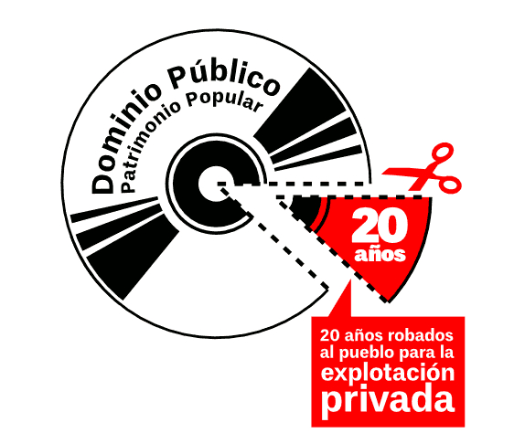

Presentación
#DerechoALaCultura es la primera de un conjunto de campañas sucedidas en Uruguay entre 2013 y 2019 en torno a distintas propuestas de modificación de la legislación sobre derechos de autor.
Esta primera campaña se genera de manera imprevista en respuesta a una propuesta de reforma que buscaba extender la duración de la propiedad intelectual de una obra de 50 a 70 años después de la muerte de el/la autor/a.

El caso se enmarca en un período intenso de luchas globales en relación a la apropiación y privatización del conocimiento (tanto obras artísticas como desarrollos científicos y tecnológicos) por parte de grupos empresarios. Si pensamos en que los derechos de propiedad intelectual son una forma para alentar y reconocer la creación, cuando estos derechos se extienden más allá de la vida del/la autor/a ¿de qué estamos hablando realmente? En estos casos los intereses por la extensión corresponden a organizaciones comerciales que se apropian de estos derechos que funcionan a modo de renta o regalías, obstaculizando e impidiendo el uso público y abierto de las producciones culturales e intelectuales de la humanidad.
#DerechoALaCultura fue una campaña que buscó ampliar y asegurar el acceso público al conocimiento y a la cultura. Aquí la primera comunicación que publicaron en un sitio web creado específicamente en el proceso de campaña:
Si bien este primer intento de modificación de la ley logró frenarse, la presión continuó y demandó prolongar la organización. En los siguientes apartados iremos compartiendo estas experiencias.